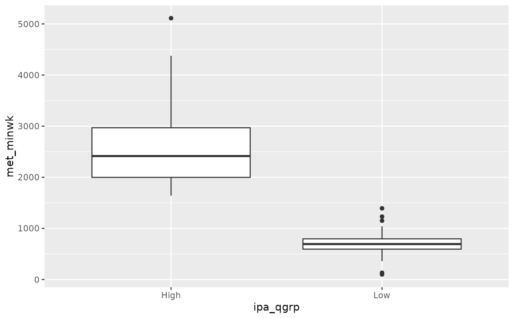

The data are from a convenience sample of 25 women and 10 men who were middle-aged or older. The purpose of the study was to understand the relationship between sedentary behavior and thickness of the medial temporal lobe (MTL) in the brain.
mtlFormat
A data frame with 35 observations on the following 23 variables.
- subject
ID for the individual.
- sex
Gender, which takes values
F(female) orM(male).- ethnic
Ethnicity, simplified to
CaucasianandOther.- educ
Years of educational.
- e4grp
APOE-4 status, taking a value of
E4orNon-E4.- age
Age, in years.
- mmse
Score from the Mini-Mental State Examination, which is a global cognition evaluation.
- ham_a
Score on the Hamilton Rating Scale for anxiety.
- ham_d
Score on the Hamilton Rating Scale for depression.
- dig_sym
We (the authors of this R package) are unsure as to the meaning of this variable.
- delay_vp
We (the authors of this R package) are unsure as to the meaning of this variable.
- bfr_selective_reminding_delayed
We (the authors of this R package) are unsure as to the meaning of this variable.
- sitting
Self-reported time sitting per day, averaged to the nearest hour.
- met_minwk
Metabolic equivalent units score (activity level). A score of
0means "no activity" while3000is considered "high activity".- ipa_qgrp
Classification of
METminwkintoLoworHigh.- aca1
Thickness of the CA1 subregion of the MTL.
- aca23dg
Thickness of the CA23DG subregion of the MTL.
- ae_cort
Thickness of a subregion of the MTL.
- a_fusi_cort
Thickness of the fusiform gyrus subregion of the MTL.
- a_ph_cort
Thickness of the perirhinal cortex subregion of the MTL.
- a_pe_cort
Thickness of the entorhinal cortex subregion of the MTL.
- asubic
Thickness of the subiculum subregion of the MTL.
- total
Total MTL thickness.
Source
Siddarth P, Burggren AC, Eyre HA, Small GW, Merrill DA. 2018. Sedentary behavior associated with reduced medial temporal lobe thickness in middle-aged and older adults. PLoS ONE 13(4): e0195549. doi: 10.1371/journal.pone.0195549 .
Thank you to Professor Silas Bergen of Winona State University for pointing us to this data set!
References
A New York Times article references this study. https://www.nytimes.com/2018/04/19/opinion/standing-up-at-your-desk-could-make-you-smarter.html
Examples
library(ggplot2)
ggplot(mtl, aes(x = ipa_qgrp, y = met_minwk)) +
geom_boxplot()
